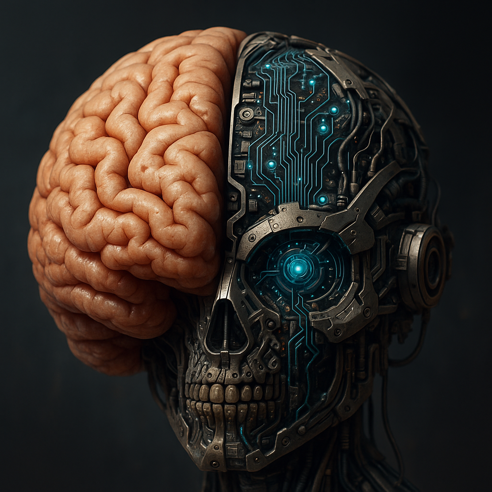

¿Qué son los agentes de OpenAI?
Los agentes de OpenAI son sistemas de inteligencia artificial diseñados para interactuar con usuarios y sistemas de forma autónoma. Estos agentes combinan capacidades de procesamiento del lenguaje natural, razonamiento y aprendizaje para ayudar en tareas complejas.
¿Cómo funcionan?
Funcionan mediante modelos avanzados de IA que analizan instrucciones, toman decisiones y ejecutan acciones. Utilizan contextos, aprendizajes previos y conexiones con APIs externas para responder de manera efectiva y eficiente.
¿Qué pueden hacer?
- Programar y depurar código.
- Automatizar publicaciones en redes sociales y blogs.
- Generar imágenes y contenido multimedia.
- Interactuar con APIs para obtener información o ejecutar acciones.
- Asistir en la redacción de documentos y análisis de datos.
La fusión entre mente y máquina
La inteligencia artificial puede integrarse de manera armoniosa con la mente humana para potenciar nuestras capacidades. La siguiente imagen ilustra esa fusión.
